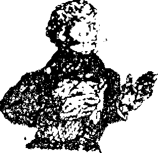
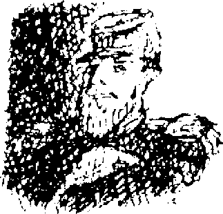
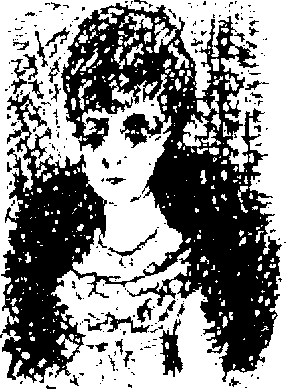

1
Bir keresinde kafeden eve geldim ve dairemize çıkan merdivenleri tırmandım. Kapıyı daha önceden kararlaştırdığımız gibi şifreli çalınca karım hemen açtı. Yüzü, göz yaşlarından sırılsıklamdı, sinir krizi geçirmek üzereydi. Masanın üzerinde içinde Patera’nın portresi olan deri kutu duruyordu.
“Bu neden masanın üzerinde? Bir şey mi oldu?”
“Onu gördüm -evet- onu orada gördüm.” Kopuk ve karışık konuşuyordu. “Hâlâ anlamıyorum. Ama bir hayal olamaz. O gözlere sahip başka biri daha olamaz.”
“Kendini topla ve bana tam olarak neler olduğunu anlat.” “Pazardan geliyordum. Tam Uzun Cadde’ ye dönmeden önce - hava kararıyordu ve eve dönmek için acele ediyordum- hızla arkamdan gelen ayak sesleri duydum. Bir lambacıydı, aceleyle yanımdan geçerken neredeyse bana çarpıyordu. O sırada bir an için başını çevirdi ve “Afedersiniz,” dedi. Ama -ah çok korkunçtu- senin arkadaşın Patera’ydı o!”
Son kelimeleri haykırarak söylemişti. Yanaklarından aşağı yaşlar süzülüyordu. Hıçkırarak başını omzuma gömdü. Onu sakinleştirmeye çalıştım, ama ben de çok şaşırmıştım, kendimi kontrol etmekte güçlük çekiyordum.
“Yanılmış olmalısın,” dedim en sakin sesimi kullanmaya çalışarak, “Eminim yanılmış olmalısın. Alacakaranlıkta Hava kararırken böyle şeyler hepimizin başına gelir. Hem Patera, yani bütün bu ülkeye sahip olan adam, sıradan bir lambacı gibi dolaşmaz, değil mi?”
Sesim kararsız çıkıyordu, ben de endişelenmiştim.
“Ah, böyle konuşma, her şeyi daha kötü hale getiriyorsun. Yüzü tıpkı bir maske gibi ifadesizdi, ama o gözleri! Gözlerinde donuk bir parıltı vardı. Düşündükçe hala ürperiyorum.” Elleri çok sıcaktı, ateşi çıkmak üzereydi, yatıp uyuması için ısrar ettim. Kafede duyduğum saçmasapan dedikoduları anlatarak moralini düzeltmeye
çalıştım ama yaşadığı olaydan başka bir şey düşünemiyordu. Ayrıca ben de korkmuştum. Burada hayat giderek daha yıpratıcı ve bunaltıcı bir hal alıyordu. Günler yavaş yavaş, monoton bir biçimde ilerlemesine rağmen hiç dinlenemiyorduk, bir saat sonra neler olacağım bilemiyorduk.
Rüya Ülkesi’nden giderek sıkılmaya başlamıştım. Karımın yaşadıkları elbette bir sanrıdan ibaretti. Ne yani? Arkadaşım Patera’nın karnaval kostümü giyip etrafta dolaşmaktan daha önemli işleri vardı. Yine de bu sanrı bir uyarıydı, acı çeken sinirler seslerini duyurmaya çalışıyorlardı.
II
En sonunda Nicholas Castringus’la tanıştım. Benden hoşlanıp hoşlanmadığından bir türlü emin olamamıştım. Rüya Aynası’ndaki işini bırakmak zorunda kalmıştı, şimdi serbest çalışıyordu. Onu çok orijinal ve yanındaki iki arkadaşından, yani De Nemi ve fotoğrafçıdan çok daha hoş buldum. Castringus duygularını saklamakta pek başarılı değildi, çekememezliği ve kıskançlığı ortadaydı.

Demek ki zararsız bir adamdı, iyi yönlerinden keyif alabilirdiniz. Sanatçılar çoğu zaman iyi insanlardır, arada bir ucuz bir dalavere çevirirler, işte o kadar. Duyarlılığımız yüzünden büyük çapta kötülükler yapmaya zamanımız kalmaz. Çalışmalarımıza çıplak ruhlarımızı yansıtırız, böylece herkes doğru koşullar altında nasıl bir vicdansız olabileceğimizi görmüş olur. Sanat bir emniyet sübabıdır!
Ben Rüya Ülkesi’ne gelmeden önce Castringius sanatında sadelik dönemini yaşıyordu. Üç dört çizgi çizip resmini bitiriyordu. Bu tarza “Mükelleflik” diyordu. En önemli çalışmalarının isimleri; Kafa, Bu, Şu, Biz, O’ydu. Bu resimler hayal gücüne sınır koymuyordu. Örneğin, çiçek vazosunda bir kafa her anlama gelebilirdi. Fakat benim çalışmalarım dikkat çekmeye başlayınca Castringius daha oturaklı işler yapmak zorunda kalmıştı. Yeni işleri, Kardinal Dansı Yapan Çılgın Papa gibi isimler taşıyordu.

Fransız Mahallesi’nde bir çatıkatında küçük bir atelyesi vardı. Şehrin o bölgesinde hayatını özgürce yaşayabiliyordu. De Nemi ’yle de orada tanışmıştı. Piyade alayında subay olan De Nemi, yaşlı bir keçiydi. Mme Adrienne’nin Genelevi ’ nin sürekli müşterisiydi, aklındaki tek şey sadece o evde gerçekleşen faaliyetlerdi. Aslına bakarsanız, başka bir konudan söz etmezdi bile. Gözleri her zaman kırmızı, üniforması her zaman pisti.
Fotoğrafçıyla ilgili söyleyecek fazla şey yok. İngilizdi, uzun bir suratı, soluk sarı saçları vardı, kadife bir ceket giyer, kravatı her zaman rüzgârda uçuşurdu. Hâlâ eski yöntemlerle fotoğraf çekiyordu. Pearl’de teknoloji ancak bu kadar gelişmişti. Bunun haricinde sessiz bir adamdı, kendi likörünü kendi yapardı.
Tiyatrodan, sözediyorduk. Sadece bir kere gitmiştim. Orfeus Yeraltında oynuyordu, izleyiciler toplam üç kişiydi. Oyunculuk ve şarkılar güzel olmasına rağmen kendimi bütün gece çok rahatsız hissettim. Üç kişilik seyirci grubu kocaman tiyatronun iyice terk edilmiş görünmesine neden oluyordu. Müzik ürkütücü bir biçimde boş salonda yankılanıyordu. Oyuncular, sanki kendi zevkleri için rol yapıyorlardı.
Galeri salonundaydım. Ansızın, daha önce de burada bulunduğum hissine kapıldım, burası yıllar önce yıkılan Salzburg’daki Şehir Tiyatrosu’na çok benziyordu. Küçük bir çocukken benim için görkemli bir tapınak gibiydi o tiyatro binası. Şimdiyse karşımda, binlerce kişinin oturup kalkmasından sonra yüzeyi dümdüz olmuş ahşap sandalyeler, döşemeleri yıpranmış koyu kırmızı renkli sıralar ve çatlamış sıvalar duruyordu. Sahnenin karşısında karanlık bir loca vardı, üzerinde altın renkli harflerle Patera yazıyordu. Bazen, locanın karanlığında, ışıldayan birbirine yakın iki tane küçük ışık noktası gördüğümü sanıyordum.

Sahne arkasında olup bitenler hakkında bilgi sahibi olan De Nemi, sürekli olarak tiyatroya seyirci çekmeyi bir türlü başaramadıklarından söz ediyordu. İnsanlar, “Niçin Pearl’de bir tiyatroya ihtiyacımız olsun ki?” diyorlardı. “Zaten Pearl başlıbaşına bir tiyatro.” Bu yüzden kimse tiyatroya gitmiyordu, tiyatro iflas etmişti. Kumpanya dağılmak üzereydi. Daha düşük sınıfa ait kadın oyuncular, corps de ballet ve koro kızları geneleve gönderiliyordu, yine de balerin ya da şarkıcı olarak kalmalarına izin veriliyordu. Diğerleri farklı oyunlar oynayacak bir tiyatro kuruyorlardı, onları Blumenstich finanse ediyordu. De Nemi çok mutluydu, tiyatroya bayılıyordu. Konu benim ilgimi fazla çekmiyordu.
Kafenin sahibi masadan masaya dolaşıyor, yüzünde aptal, kurnaz bir gülümsemeyle müşterilerini selamlıyordu. Satranç oyuncularının masasına gelince başlarına dikildi ve satrançla ilgili hiçbir şey anlamayacak kadar aptal olmasına rağmen ciddi bir ifade takınıp oyunu seyretmeye başladı.
Esnedim ve pencereden dışarı baktım. Değirmene buğday çuvalları taşıyorlardı. İki değirmenciyi hemen tanıdım, biri sürekli güler, öbürü her zaman somurturdu. Şehirde en eski dış görünüşe sahip olan iki insan onlardı, hâlâ peruk takıyor ve tokalı ayakkabılar giyiyorlardı. Bir araba geçti. İçinde zarif bir hanım vardı. De Nemi beni dirseğiyle dürterek, “Onu tanıyor .musun?” diye sordu. “Sizin evsahibeniz, Dr Lampenbogen’ın karısı.” Alaycı bir kahkaha attı, diğerleri de kıs kıs güldüler. Araba hamama doğru gidiyordu.
Garsonu çağırıp hesabı ödedim. Birinci sınıf bir dolandırıcı olan garson Anton, para üstünü verirken elime Fransız devrimi döneminden kalma değersiz assignat'lar tutuşturmaya çalıştı. Bu sefer fark etmiştim, yüzünde arsız bir sırıtışla paraları geri aldı.